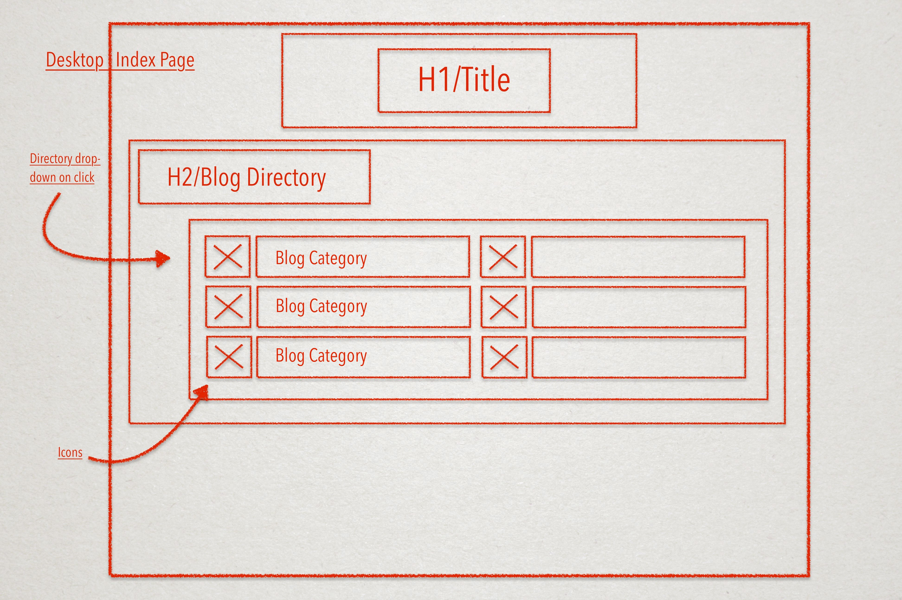
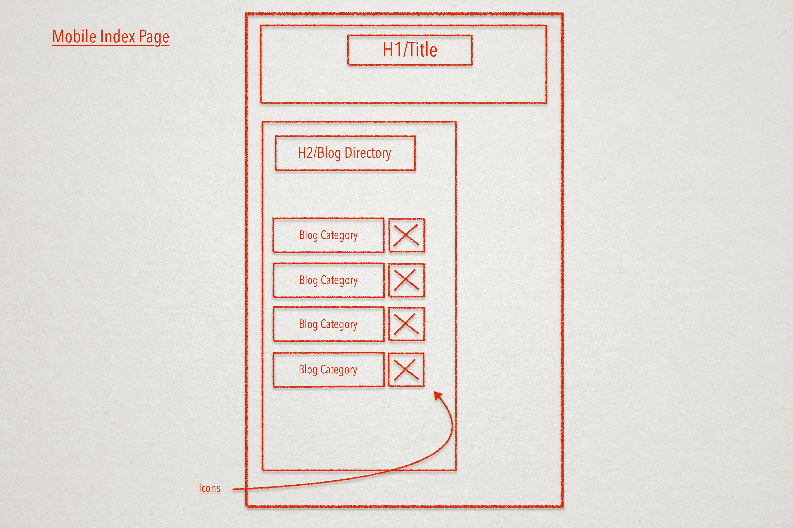
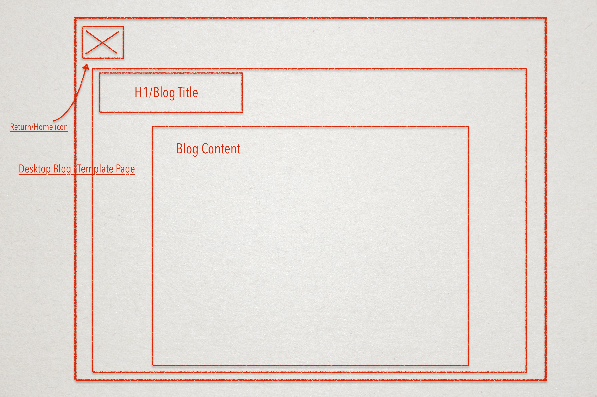
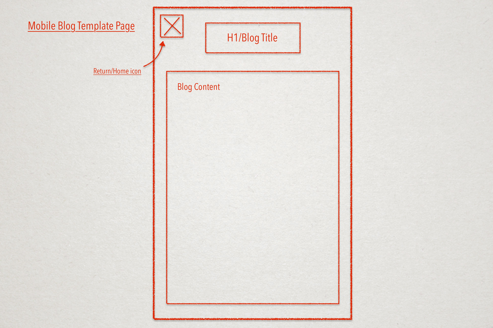

Responsive websites are great because they are adaptable — not designed for engagement on just one type of device (atypically computers), but recognise screen resolutions so arrange and scale web content accordingly. Previously used 'mobile versions' of websites are in decline as responsive webpages solve this problem, are less trouble to design and to use.
Mobile first design refers to a design process which aims to problem solve mobile design as a first thing, and larger viewing such as for desktop browsers, last. Mobile friendly content often translates well to larger devices, while the reverse process proves to bring up more complications.
Frameworks provide standardised structures on which developers can build content, without having to solve already-solved problems. Frameworks are especially helpful when needing to do quick jobs or if faced with a particular problem e.g; the implemented Skeleton framework directly solves the problem of responsive design for this webpage. Although frameworks can be modified, using whole frameworks can be limiting if designing a webpage requiring more specific functions.
Wireframes are visual mockups of a webpage's skeletal structure. Using wireframes make designing easier, while also gives others more clear understanding of what you — or another developer — is actually trying to do.




Adding icons next to individual blog links started feeling near impossible. Skeletons column framework was not helpful in trying to make this happen, but I'm not yet sure how else to do this anyway. Additionally, the mobile and desktop versions of the index page have these proposed icons on opposite sides; something I didn't really think about.